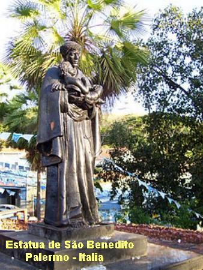
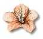

"SÃO BENEDITO"

= ÍNDICE =

-PALAVRAS INICIAIS-FRUTO ABENÇOADO - (DESCENDÊNCIA; O MENINO BENEDITO; CHAMADO DE DEUS)
-GUARDIÃO E OBREIRO - (UMA MUDANÇA FORÇADA; DEUS PROVIDENCIARÁ OUTRO LOCAL; O CONSELHO DA MÃE DE DEUS; MÃOS A OBRA NO CONVENTO; CEIA DE NATAL; GUARDIÃO DO CONVENTO; NÃO NEGAR NADA AOS POBRES E FAMINTOS)
-DONS DIVINOS - (HUMILDADE; MESTRE DOS NOVIÇOS; PROCISSÃO DE LOUVOR AO SANTO; CONCLUÍDO O CAPÍTULO GERAL; INTERCEDENDO JUNTO A DEUS; AS VIRTUDES DO SANTO; CONTRA A SUPERSTIÇÃO; DOM DA PROFECIA)
-FINAL DA CAMINHADA EXISTENCIAL - (O CONSOLADOR DAS MÃES; SEUS ÚLTIMOS DIAS; BEATIFICAÇÃO E CANONIZAÇÃO; IMAGENS DE SÃO BENEDITO; ORAÇÃO)
-ORAÇÃO, E-MAIL E FIRMAS DE BUSCAS